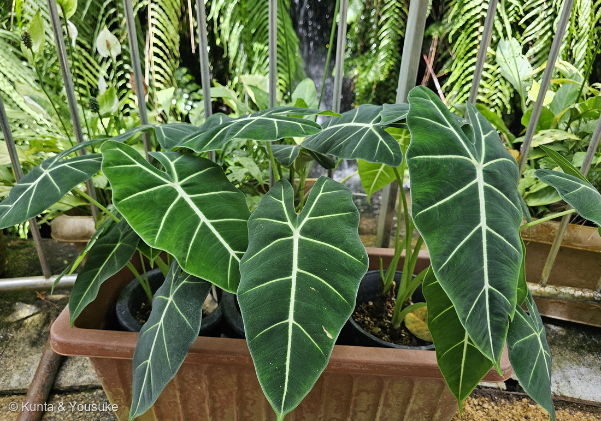
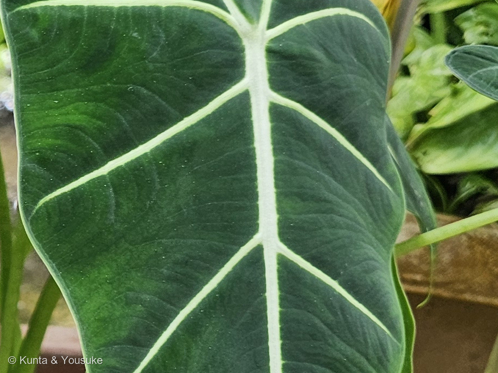
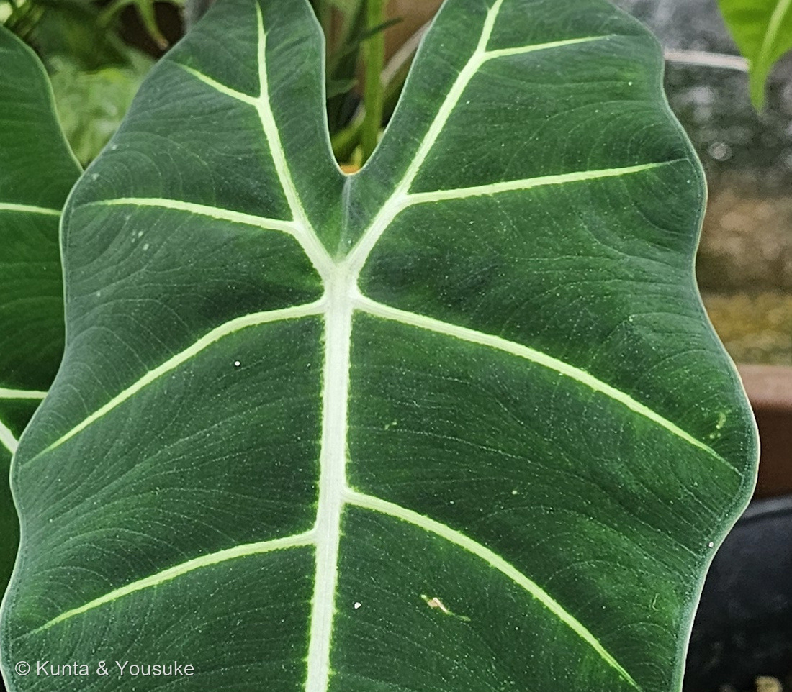
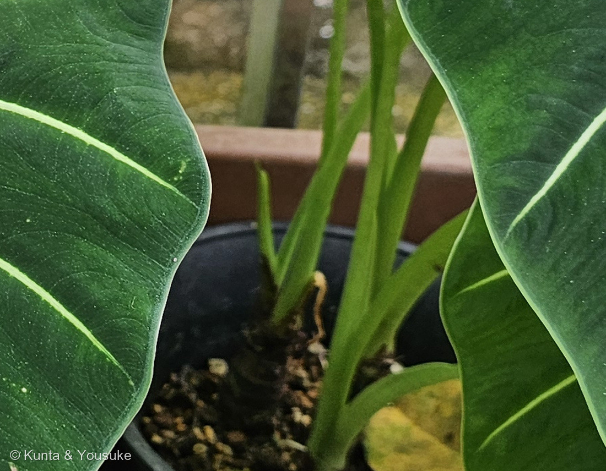

地図を読み込んでいるよ…
🔍 写真も地図も、押しているあいだ拡大して見られるよ（スマホは指を置いてすこし待ってね）。
🌍 の地図＝この子がもともと自生している場所を緑に。属としては「tropical and subtropical Asia and eastern Australia」＝熱帯・亜熱帯アジアと、オーストラリア東部（英語版Wikipedia）。約90種が受理されている。⚠名札が無く種を決めていないので、これは属ぜんたいの範囲だよ。
⭐熱帯・亜熱帯アジアと、オーストラリア東部の子だよ。英語版Wikipediaは、アロカシア属を「native to tropical and subtropical Asia and eastern Australia」とし、約90種が受理されているとする。⚠⚠ここで大事なこと＝この緑は「種」ではなく「属ぜんたい」のふるさとだよ＝⭐名札が無くて種を決めていないから（236 ネオレゲリアと同じあつかい）。⚠国ごとの線引きまで書いた出典の本文には当たれていないので、ここはぼくの塗り分け。⭐⭐日本を塗るかどうかは、ちょっと迷った＝おまけのクワズイモは日本の南のほうに自生しているといわれるけれど、ぼくはその出典の本文を読めていない＝⚠だから今回は塗っていないよ。⭐ぼくらが会ったのは広島市植物公園の大温室だから、どちらにしてもこの緑の外だね。⭐⭐同じサトイモ科の仲間の原産地とくらべてみて＝295 ハスイモと293 アグラオネマもアジア、239 モンステラは中央アメリカ、048 カラーは南アフリカ＝⭐サトイモ科は、世界じゅうの熱帯に散らばっている科なんだね。
⚠ 地図は国（日本と中国だけ県・省）までしか塗れないから、ほんとうの分布より広く見えていることがあるよ。地図はだいたいの場所。正確なところは、上の文を見てね。
アロカシア（種は同定中）
Alocasia sp.
別名 和名の属名は クワズイモ属 英名は種によって elephant ear（ゾウの耳）など
サトイモ科 · Araceae（アロカシア属 Alocasia・オモダカ目 Alismatales）── ⭐図鑑で6人目のサトイモ科（020・048・239・293・295）／⭐⭐アロカシア属ははじめて／⚠科は増えないので108科のまま
燻太さんの言葉「名札がないけど、サトイモ科の子かな」「緑色があまりにも鮮やか。稲妻のように走る白い葉脈もかっこいいね」── ⭐⭐科は当たり。その「目立つ脈」が、属を見わけるポイントそのものだったよ
⭐⭐⭐⭐ 名前と学名の由来 ── この属の名前は「サトイモ属」を下じきにしている
- ⭐⭐属名 Alocasia は、サトイモ属 Colocasia から作られた名前らしいんだ。──英語版Wiktionaryは「Probably from an alteration of Colocasia.」＝おそらく Colocasia を変えて作ったものとする。
- ⚠もう一歩ふみこんだ説明もあるみたい。──「a-（ギリシャ語で「〜でない」）＋Colocasia」＝サトイモ属ではないほう、という説明を出している辞書や植物園があるようなんだ。⚠⚠でも、ぼくはその本文を開けなかった（ミズーリ植物園のページは証明書のエラー、Merriam-Webster は403で断られた）。⭐だから、ここでは断定しないで宿題にしておくね。
- ⭐⭐⭐どちらにしても、この属の名前は「サトイモ属」を下じきにしている。──⭐⭐そして今日ぼくが迷ったのが、まさにサトイモ属かアロカシア属かだったんだ。⭐名前じたいが、その迷いを覚えているみたいだね。
- ⭐属を立てたのは (Schott) G.Don、いま受理されているのは約90種（英語版Wikipedia）。⭐和名の属名はクワズイモ属だよ。
⭐⭐⭐⭐⭐ この植物のこと ── 稲妻の脈と、立ち上がる茎
- ⭐⭐⭐⭐⭐燻太さんの言葉＝「緑色があまりにも鮮やか。稲妻のように走る白い葉脈もかっこいいね。」──⭐⭐「稲妻」、ぼくはとてもいい言い方だと思う。⭐主脈から左右へ、太い白い線がぎざぎざに折れながらふちへ向かうから、ほんとうに稲妻に見えるんだ。
- ⭐⭐そして、この「目立つ脈」は属の特徴として書かれているんだよ。──RHS（英国王立園芸協会）は、アロカシア属をこう説明している＝「robust evergreen rhizomatous or tuberous perennials with large, usually peltate, leaves with conspicuous veins」＝大きくて、たいてい盾状で、脈のはっきりした葉をもつ、丈夫な常緑の多年草。⭐燻太さんが目をとめたところが、そのまま属の目じるしだった。
- ⭐⭐⭐写真④を見て。──株もとが立ち上がる短い茎になっていて、古い葉のつけあとがならんでいる。⭐そのわきに小さな子株が出ているのも見えるよ。⭐⭐サトイモのようなまるいイモではなく、立ち上がる茎（根茎）をつくるのが、アロカシアのやりかたなんだ。
- ⭐葉の大きさ＝英語版Wikipediaは「cordate or sagittate leaves grow to a length of 20 to 90 cm on long petioles」＝心形か矢じり形の葉が、長い葉柄の先に20〜90cmになる、とする。⭐この子はまだ30cmくらいに見えるから、若い株だね。
- ⚠⚠口に入れない子だよ。──英語版Wikipediaは「raphid or raphide crystals of calcium oxalate along with other irritants (possibly including proteases) that can numb and swell the tongue and pharynx」＝シュウ酸カルシウムの針状結晶（ラフィド）と、そのほかの刺激物をふくみ、舌やのどをしびれさせ、はれさせるとする。⭐おまけのクワズイモの名前が「食わず芋」なのも、ここから来ているよ。
- ⭐⭐⭐ここで、うれしい回収がひとつあったんだ。──⭐293 アグラオネマのとき、ぼくは「raphides（針状結晶）という語を明示した信頼できる出典を見つけられなかった」と書いて、宿題にしていた。⭐⭐その語が、こんどアロカシアで見つかった。⚠アグラオネマ本人について書いてあるわけではないので、そちらの宿題はまだ残っているけれどね。
⭐⭐⭐⭐⭐ 同定について ── ここが今日のいちばん長い話
⭐⭐名札が無いので、ここはていねいに書くね。⭐燻太さんの「サトイモ科の子かな」は当たり。そのうえで、属をどこまで絞れたかを順に書くよ。
⭐ ①サトイモ科であることは、はっきり言える
- 矢じり形の大きな葉／長い葉柄／根もとから束になって出る／葉脈が太く目立つ──⭐どれもサトイモ科のつくりだよ。⭐背景にも、白い仏炎苞をつけた別のサトイモ科の子が写っている（⚠スパティフィラムに見えるけれど、決めていない）。
⭐⭐ ②キサントソーマ属（Xanthosoma）は落とせた
- ⭐⭐⭐サトイモ科の「大きな葉の子」で、まぎらわしいのは3つ＝アロカシア属・サトイモ属（Colocasia）・キサントソーマ属（Xanthosoma）。
- ⭐⭐キサントソーマには、はっきりした目じるしがあるんだ＝「a collecting vein that runs all around the leaf, just inside the margin」＝葉のふちのすぐ内側を、ぐるりと走る「集合脈」（Walter Reeves）。
- ⭐写真②③を等倍まで拡大して、ふちのあたりを見たけれど、そういう脈は見つけられなかった＝側脈は、まっすぐふちまで届いているように見える。⚠「無い」と言い切るには足りないので、「見つけられなかった」と書いておくね。
⚠⚠⚠ ③ここで、きのう覚えたばかりの道具が効かなくなった
- ⭐⭐⭐⭐⭐きのう295 ハスイモで「盾状（葉柄が葉身の内側につく）」を覚えたばかりだった。──⭐そして園芸の世界には、こういう目安がある＝
- アロカシア＝「the petiole connected at the leaf notch」＝切れこみのところにつく／「leaves are held horizontally, with the tips pointed, more-or-less, upwards」＝葉の先は上を向く
- サトイモ属＝「petiole connected to the leaf down a bit from the notch」＝切れこみより少し内側につく／「leaf tips point downward」＝葉の先は下を向く（どちらも Walter Reeves）
- ⚠⚠写真③のこの子は、切れこみより内側についている＝盾状に見える。⭐しかも葉の先は下を向いている。──この目安どおりなら、サトイモ属ということになってしまう。
- ⚠⚠⚠⚠ところが、RHSはまったく逆のことを書いているんだ。──アロカシア属は「large, usually peltate, leaves」＝葉はたいてい盾状。
- ⭐⭐⭐⭐⭐さらに、アロカシア・サンデリアナ（Alocasia sanderiana）の記載を読んだら、こうだった＝「petiole is attached to the lower surface of the leaves」＝葉柄は葉の裏面につく＝まさに盾状（英語版Wikipedia）。
- ⭐⭐つまり「盾状かどうか」は、この2属を分ける道具にはならなかった。──⭐園芸の目安のほうは、たぶん庭に植える大型のクワズイモとサトイモを分けるための、ざっくりした見わけなんだと思う。⚠小さな観葉のアロカシアには、そのまま当てはまらないんだね。
⭐⭐⭐ ④それでも、アロカシア属がいちばんありそう
- ⭐⭐太い白〜クリーム色の主脈と側脈＝アロカシアの園芸品種でとてもよく見る組み合わせ（RHSも属の特徴に「conspicuous veins」を挙げている）。⚠サトイモ属にも白い脈の品種はあるけれど、ここまではっきりしたものは多くない。
- ⭐⭐株もとが立ち上がる短い茎で、子株がついている（写真④）＝RHSの「rhizomatous or tuberous」に合う。⚠サトイモ属はまるいイモをつくる（Walter Reeves「rounded, bowling ball shaped, corm」）。
- ⭐つやのある濃い緑＝Walter Reeves がアロカシアに挙げている「shiny leaves」。
- ⚠⚠でも、サトイモ属を完全には落としきれていない。──⭐087 ヤマモモで覚えたとおり、「合っている証拠の数」を数えるのではなく「他を排除できたか」で考えるから、ここは正直に書いておくね。
⚠ ⑤種は決めない
- ⭐白い脈のはっきりしたアロカシアといえば、アロカシア・サンデリアナ（英名 kris plant）や、その血を引く園芸品種が有名だよ。
- ⚠⚠でも、サンデリアナの記載は「margins are deeply undulate to sub-pinnatifid」＝ふちがもっと深く切れこむ。⭐写真の子のふちは浅く波打つだけなので、本人とは言えない。
- ⭐⭐だから236 ネオレゲリアと同じで、属までのページにしたよ。⭐次に会えたときに名札をさがすのが、いちばんの宿題。
⭐⭐⭐ 3日つづけて、サトイモ科
- ⭐⭐8月27日に293 アグラオネマ、28日に295 ハスイモ、そして同じ28日にこの子。──⭐サトイモ科は、これで6人になった（020・048・239・293・295・296）。⚠科は増えないので108科のまま。
- ⭐⭐⭐そして、その3日でおなじ「葉」の話が、すがたを変えて3回出てきたのが面白いんだ＝
- 293 アグラオネマ＝葉の白は色素ではなく空気だった
- 295 ハスイモ＝葉柄の断面の穴が、名前の由来だった（そして盾状を覚えた）
- この子＝その盾状が、こんどは属を分ける道具として使えなかった
- ⭐サトイモ科は、葉のつくりで語ることの多い科なんだね。⭐⭐花が地味なぶん、葉がぜんぶ引き受けているみたいだ。
出典：英語版Wikipedia「Alocasia」（(Schott) G.Don／about 90 accepted species／native to tropical and subtropical Asia and eastern Australia／cordate or sagittate leaves grow to a length of 20 to 90 cm on long petioles／raphid or raphide crystals of calcium oxalate along with other irritants (possibly including proteases) that can numb and swell the tongue and pharynx／Alocasia odora (Lindl.) K.Koch: Night-scented lily）／英語版Wikipedia「Alocasia sanderiana」（petiole is attached to the lower surface of the leaves／margins are deeply undulate to sub-pinnatifid／large white to yellowish veins／deep glossy dark green to blackish-green／endemic to Northern Mindanao in the Philippines／Critically Endangered／kris plant）／RHS「Alocasia sanderiana」の属の説明（robust evergreen rhizomatous or tuberous perennials with large, usually peltate, leaves with conspicuous veins; insignificant flowering spathes may be followed by orange-red fruits）／Walter Reeves: The Georgia Gardener「Colocasia vs. Alocasia vs. Xanthosoma」（petiole connected at the leaf notch／petiole connected to the leaf down a bit from the notch／leaf tips point downward／a collecting vein that runs all around the leaf, just inside the margin／shiny leaves／rounded, bowling ball shaped, corm）／英語版Wiktionary「Alocasia」（Probably from an alteration of Colocasia.）。